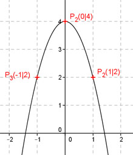

Aufgabe 75 Wie groß sind a, b und c bei einer Funktion der Form y = ax2 + bx + c, wenn ihr Graph durch die Punkte P1(1|2), P2(0|4) und P3(-1|2) geht? P2 ergibt: x = 0 und y = 4 Eingesetzt in y = ax2 + bx + c 4 = a * 02 + b * 0 + c c = 4 P1 ergibt: x = 1 und y = 2 und c = 4 Eingesetzt in y = ax2 + bx + c 2 = a * 1² + b * 1 + 4 | -4 a + b = -2 (1) P3 ergibt: x = -1 und y = 2 und c = 4 Eingesetzt in y = ax2 + bx + c 2 = a * (-1)2 + b * (-1) + 4 | -4 a - b = -2 (2) Lösung des linearen Gleichungssystems mit (1) und (2): a + b = -2 a – b = -2 ------------ 2a = -4| :2 a = -2 In (1) eingesetzt: -2 + b = -2 | +2 b = 0 Es handelt sich um die Funktion: y = -2x2 + 4 